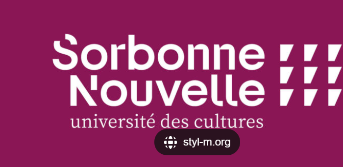

Programmation pour les Humamnités Numériques
Yasmine LOURACH
Licence 3 des Sciences du Langage

Mon CV des trois dernières années :
| année universitaire | Statut |
|---|
| 2024-2025 | Cette année |
| 2023-2023 | L'année d'avant |
| 2022-2023 | L'année d'encore avant |
Voici les cinq derniers livres que j'ai lu :
- Orgueil et préjugés, Jane Austen, édition Gallimard
- Jane Eyre, Charlotte Brontë, édition Wordsworth Classics
- Animal Farm, George Orwell, édition Penguin
- Les Hauts des Hurlevent, Emily Brontë, édition Hauteville
- 1984, George Orwell, édition Folio